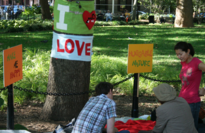
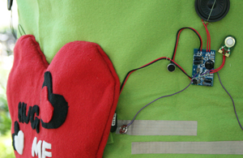
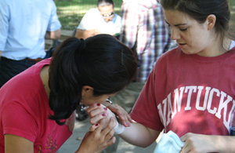
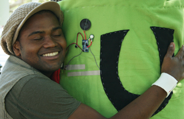
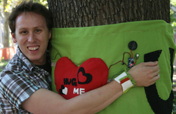
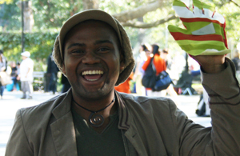

2010 Oct, Community Workshop supported in part by the National Science Foundation grants ISE-0741685
Photographer:Kyle Mcdonald
  
  
Documentation
Huggable Nature is a community workshop through DIY activities. With Dr. DiSalvo, I recently planned and conducted a workshop titled “Huggable Nature,” in which community participants design wearable devices and leave voice messages for trees, flowers, or bushes that play back when they hug any of the three. Any community member can participate in the activities of the Huggable Nature workshop, designing simple sensors and producing crafts, because they are easy to perform.
Workshop Organizer
Hye Yeon Nam and Carl DiSalvo
Workshop PDF (click to download)
Workshop
2011, Sept, ISEA, Istanbul, Turkey
2010 Oct, Conflux Festival